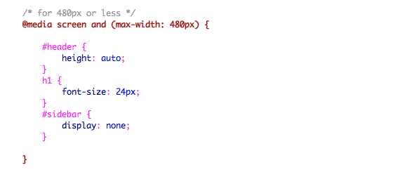

自适应网页设计（Responsive Web Design） [前端] 08月 26日
关于自适应网页设计，我个人的理解呢就是让代码"一次编写，随处运行"适用于各种场合，例如移动终端。当然这和java的概念不一样咯，没有各个平台的JVM，java是做不到一次编写随处运行的。扯多了~~
下面介绍收集整理的自适应的一些方法~
meta标签：
为了适应屏幕，不少手机浏览器都会把HTML页面置于较大视口宽度来适应屏幕大小，你可以使用meta标签的viewport来重置。The viewport tag below tells the browser to use the device width as the viewport width and disable the initial scale. Include this meta tag in the <head>.
<meta name="viewport" content="width=device-width, initial-scale=1.0">
E8及其更低版本不支持media query，可以使用 media-queries.js或 respond.js脚本实现支持。(关于CSS3 Media Queries后面还会提到)
<!--[if lt IE 9]>
<script src="http://css3-mediaqueries-js.googlecode.com/svn/trunk/css3-mediaqueries.js"></script>
<![endif]-->
CSS3 Media Queries:
CSS3 media query是自适应网页设计的关键，他就像高级语言里的if条件语句，告诉浏览器根据不同的视口宽度（这里等于浏览器宽度）来渲染网页。如果视口宽度小于等于980px，下面规则生效。
这里将容器像素宽度该用百分比，页面排版更加灵活。

当视口宽度小于等于480px时（如手机屏幕），将#header高度设为自动，h1 的字体大小设定为24px，并隐藏#sidebar。
关于CSS Media Queries这几天会有进一步的探究~~